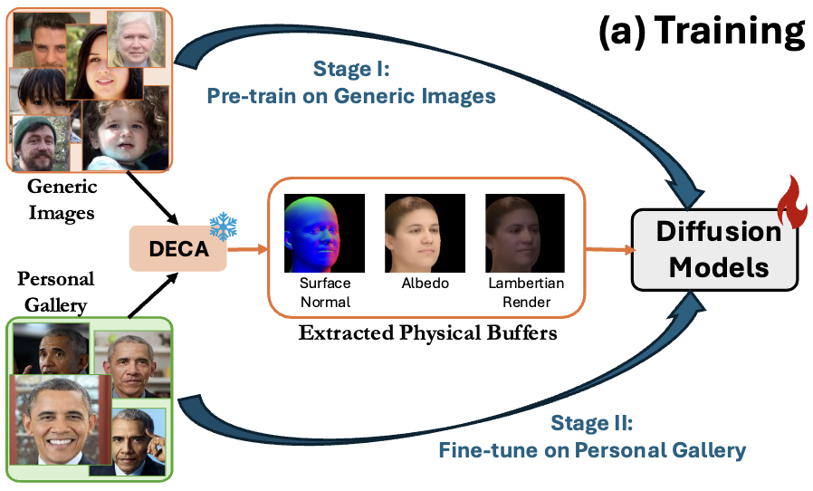
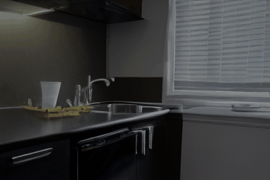
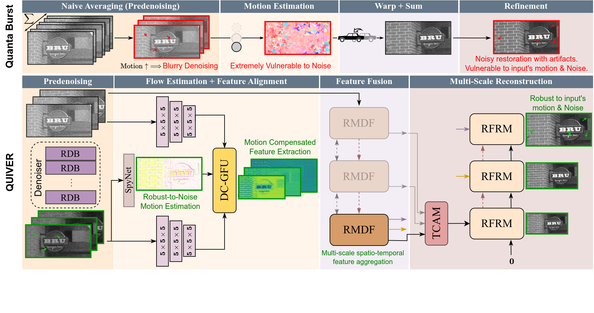
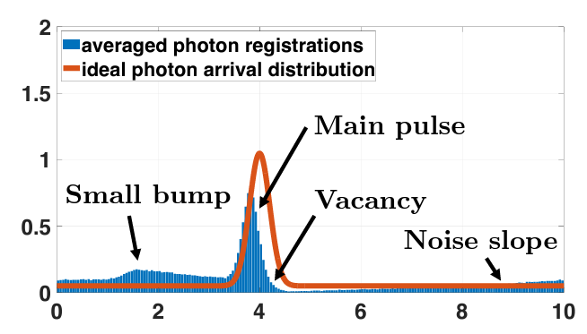
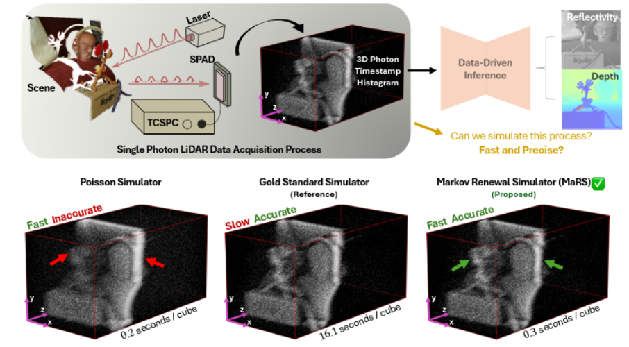
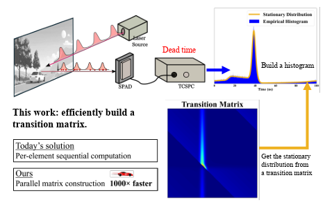
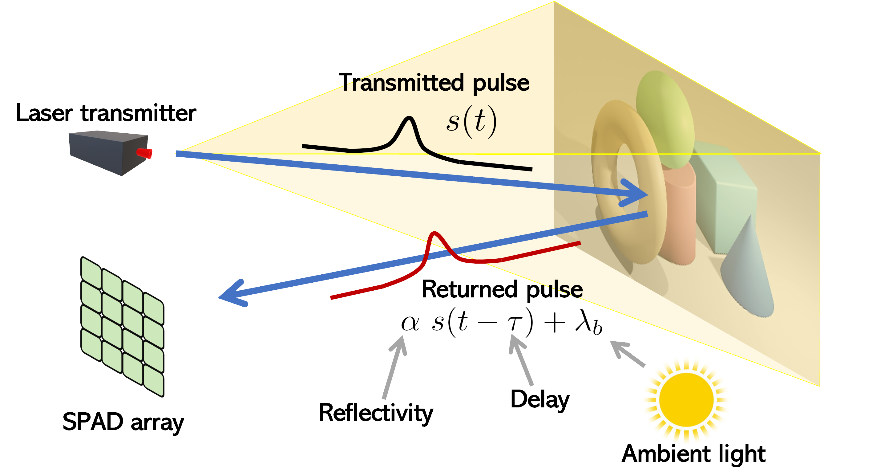
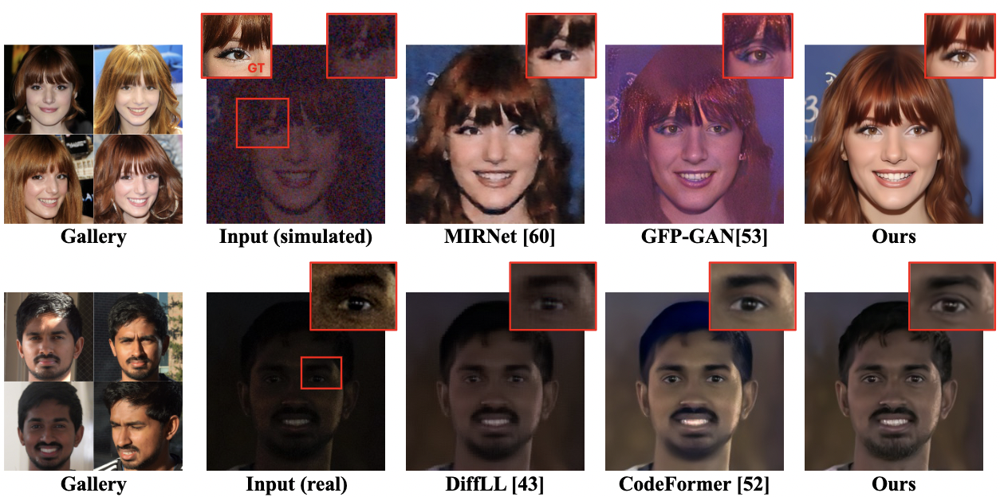

Prateek ChennuriAboutI am currently a Ph.D. Candidate in the Electrical and Computer Engineering department @ Purdue University, advised by Prof. Stanley H. Chan. I received my B.Tech-M.Tech Dual Degree from the Indian Institute of Technology (IIT) Gandhinagar in 2021. My research focuses on computational imaging and computer vision, with an emphasis on generative methods for inverse problems and perception. I work on tasks such as denoising, super-resolution, depth estimation, and reflectivity recovery, using both conventional CMOS sensors and emerging modalities including single-photon detectors (SPADs) and event cameras. More broadly, I am interested in developing practical, power-efficient imaging and perception systems that bridge algorithmic innovation and real-world deployment, particularly for real-time and resource-constrained platforms. I am currently seeking a 2026 full-time applied research position at the intersection of computational photography, camera algorithms, and generative AI. |

|
Publications









Awards
Service
Website design from Jon Barron and Zheng Shi.